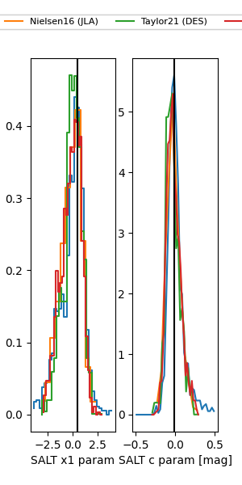

FINK: ZTF25abmouep
Lasair: ZTF25abmouep
ALeRCE: ZTF25abmouep
TNS: 2025wsc
YSE: 2025wsc
ZTF25abmouep (ztf,fink)
2025wsc (tns,yse)
equatorial (ra, dec) = (13.4513,-3.03197)
galactic (l, b) = (124.3793,-65.89707)

last ztfg=20.19, ztfr=19.98
6 ztfg, 6 ztfr detections